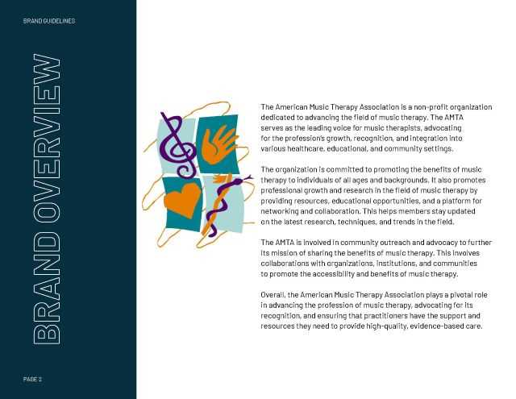
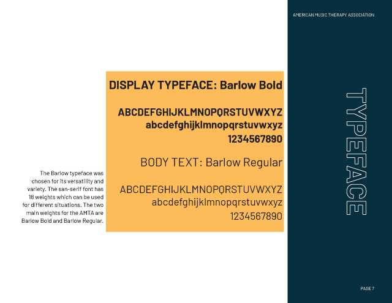
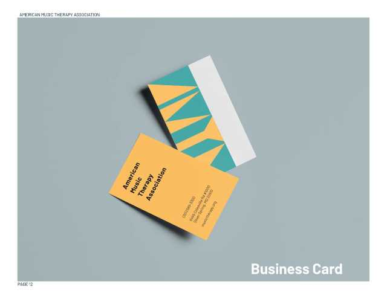
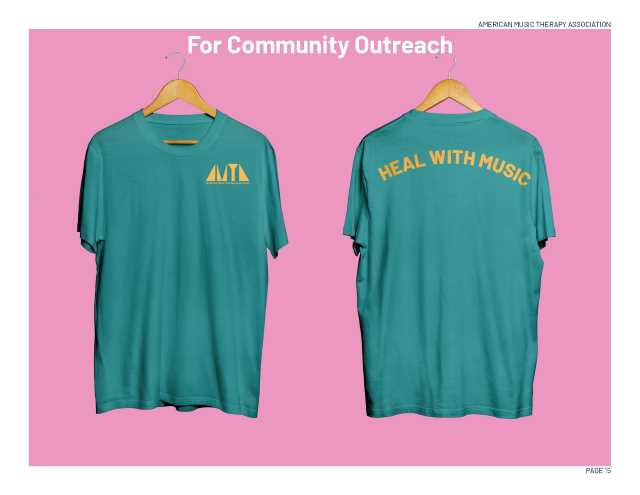
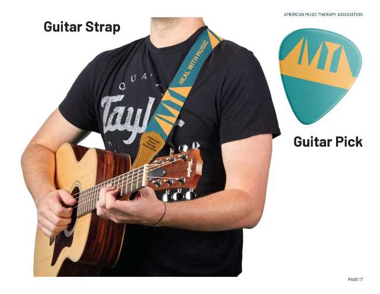

Rebranding Project: American Music Therapy Association
In my class, we were tasked with rebranding a nonprofit organization of our choice. I chose to do the American Music Therapy Association as I grew up playing the piano and flute. For this project, I developed logo variations, merchandise mock-ups and more using predominantly Adobe Illustrator and Adobe Photoshop.








Design Campaign: Euphoria
As part of an advertising design final, I was tasked with choosing a movie, television show, musical or musical artist to create campaign materials for. I chose the popular show, Euphoria, as my muse and designed posters, billboards and merchandise using predominantly Adobe Photoshop.